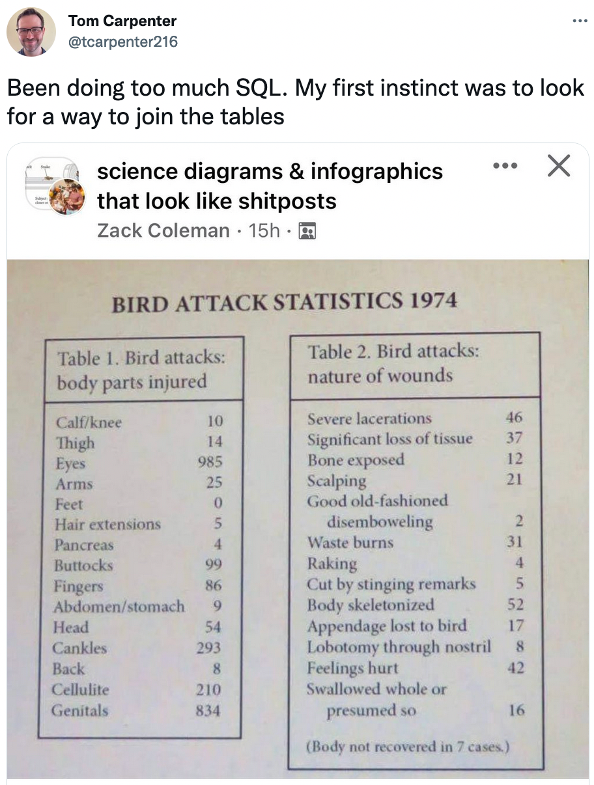
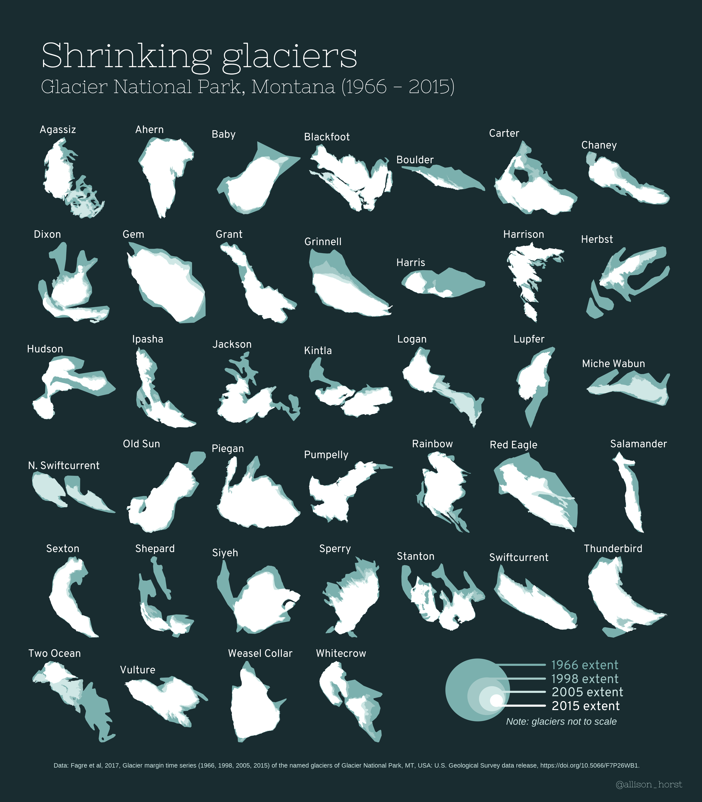
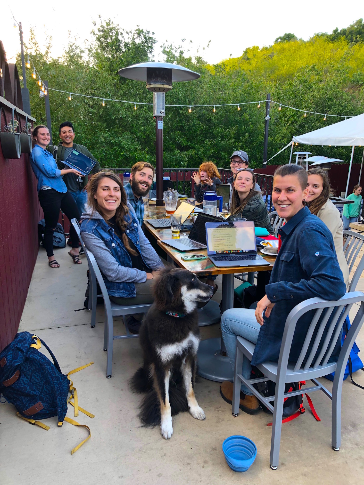
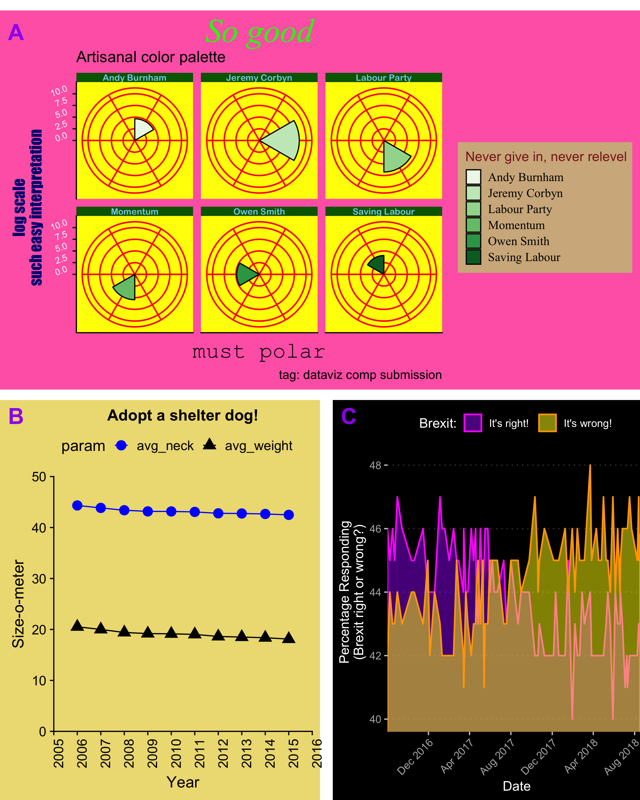

Allison Horst
Home
Talks / Workshops / Courses
CV
Posts
Categories
All
(17)
GitHub
(1)
R
(7)
RStudio
(5)
art
(2)
champions
(2)
community
(3)
data science
(2)
dplyr
(1)
teaching
(2)
Blog posts

1974…bird attacks?
Gotcha.
Oct 14, 2022
Allison Horst

Losing icons: Disappearing glaciers of Glacier National Park, MT (1966 - 2015)
Data visualization - glaciers at Glacier National Park (1966, 1998, 2005, and 2005).
Mar 11, 2022
Allison Horst
Exploring tree outcomes following fires
Basically, there’s this awesome dataset on tree survival following fires, the Fire and Tree Mortality Database, and I want to go exploring & compare fire survival across…
Mar 10, 2022
Allison Horst
Northwest Reno streetmap - dataviz fun on the side
In this project, I create a little map of northwest Reno, NV, streets using the
osmdata
(OpenStreetMap) package.
Mar 8, 2022
Allison Horst
Scraping, wrangling & viz, oh my! Fun with Columbia Basin DART (fish passage data)
GitHub
As a little side project, I decided to scrape data from the Columbia Basic Research DART (Data Access in Real Time) to explore fish passage and seasonal trends over time.
Mar 7, 2022
Allison Horst
Merge conflicts: helping data science students merge their advanced skills into existing teams
What do we do to prepare students trained in R and Python for jobs with Excel, Google Sheets and Access?
This post was written collaboratively by
Jacqueline Nolis
and me. Original data science language icons artwork (above) by Jacqueline Nolis.
Mar 31, 2021
Allison Horst and Jacqueline Nolis
Penguin wrangling in dplyr - a learnr tutorial
data science
R
RStudio
dplyr
I recently made a
learnr
tutorial introducing some functions in
dplyr
for data wrangling. Check it out:
Feb 8, 2021
Allison Horst
palmerpenguins on CRAN
palmerpenguins
data science
R
RStudio
With Drs. Alison Hill and Kristen B. Gorman, we developed a data package with structural size measurements (and more!) for 3 species of penguins recorded at islands in…
Aug 1, 2020
Allison Horst
Teach R with learnr
A powerful tool for remote teaching
teaching
R
RStudio
Cross-posted from the RStudio Education blog.
May 30, 2020
Allison Horst
Tidy data for collaboration, efficiency and reproducibility
Dr. Julia Lowndes spearheaded a collaboration to create a visual explanation of how working with tidy data can make data science more efficient, reproducible, and…
Mar 2, 2020
Allison Horst
Birds of a feather, drawn together
R
art
RStudio
By Allison Horst, Curtis Kephart, and Yanina Bellini
Feb 29, 2020
Allison Horst, Curtis Kephart, Yanina Bellini
R for Excel Users Workshop
community
This course is for Excel users who want to add or integrate R and RStudio into their existing data analysis toolkit. It is a friendly intro to becoming a modern R user, full…
Feb 18, 2020
Allison Horst and Julie Lowndes
RStudio Artist-in-Residence 2019/2020!
art
R
RStudio
Since I started drawing R- and stats-related illustrations for my students in 2018, I have been overwhelmed by the reception from the #rstats community on twitter.
Nov 19, 2019
Allison Horst
Openscapes Champions Case Study: Horst Lab
community
champions
Note: I, with my teaching assistant extraordinaire Jessica Couture, participated in the 10-week Openscapes Mentorship Program led by Dr. Julia Lowndes in 2019. Here’s a…
May 30, 2019
Horst Lab

Starting our #tidytuesday hacky hours
community
champions
This is our first community blog post by Openscapes Champion Allison Horst!
May 2, 2019
Allison Horst
Sharing (R lab) keys for success
R
teaching
I just finished my sixth year of teaching intro stats and data analysis in R to environmental studies grad students. For the first five, I convinced myself that I shouldn’t…
Apr 29, 2019
Allison Horst

There’s value in trying your [dataviz] worst
R
In the past I’ve always asked students to create their
best possible graphs
in
ggplot2
to practice creating clear, engaging data visualizations. Recently, I’ve realized…
Apr 28, 2019
Allison Horst
No matching items